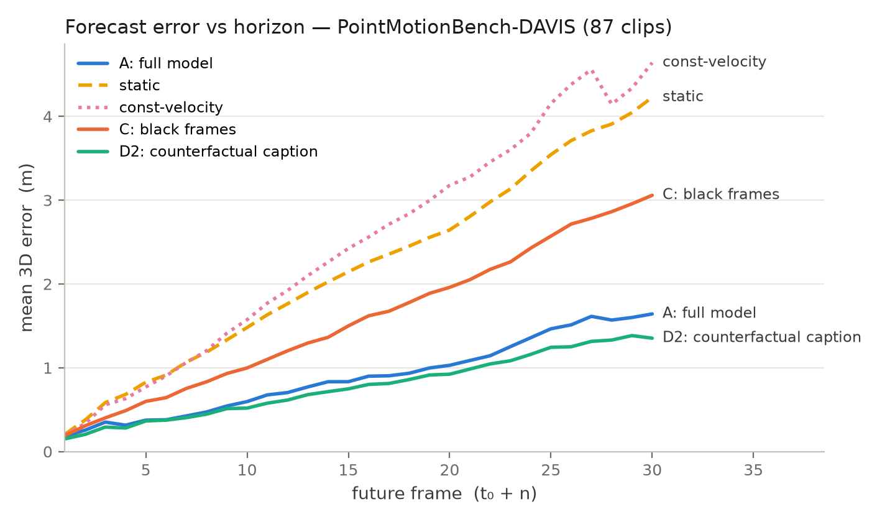

| Condition | ADE ↓ | FDE ↓ | PWT ↑ |
|---|---|---|---|
| A — full model | 0.877 | 1.733 | 0.174 |
| C — black history frames (language-only) | 1.553 | 3.152 | 0.090 |
| D2 — direction-reversed captions | 0.767 | 1.466 | 0.171 |

Reading: removing vision (C) nearly doubles ADE and degrades toward the trivial baselines, while contradictory language (D2) leaves accuracy essentially unchanged — the model follows visual dynamics rather than caption templates. The model beats static and constant-velocity extrapolation by ~2.6× at the 30-frame horizon.